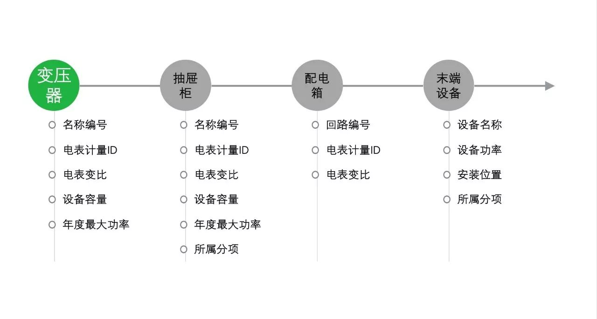
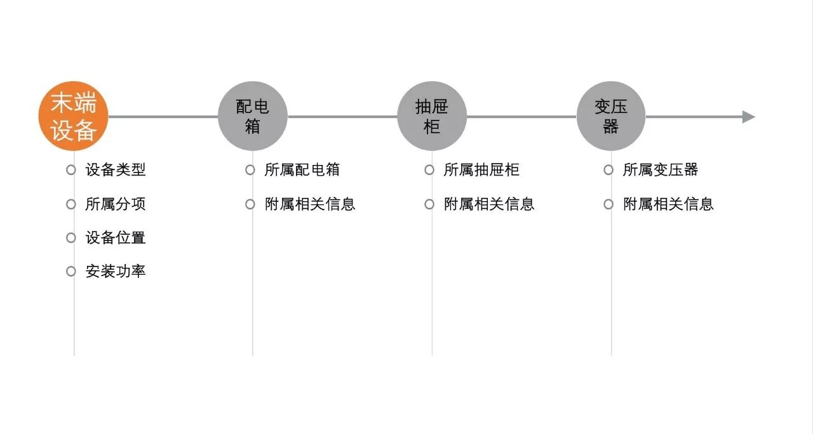

服务 | 配电系统精细化调研解决方案
发布时间：2018-01-29 阅读次数: 1021 来源：博锐尚格
目前运营时间较长的大型公共建筑，其建筑配电系统内部的相关运行维护大多只能维持在中等偏下的水平。一旦出现末端设备运行失控、偷电等问题时则难以被发现，这些问题长期累积的结果就是能耗费用的不断增加。
大型公共建筑配电系统常见问题
1. 配电系统设计复杂
通常大型公共建筑的使用功能复合且机电系统繁多，因此配电支路网的设计也往往十分复杂。从抽屉柜到强电井再至末端之间的关系犹如蛛网一般，难以理顺。
2. 配电系统信息维护困难
随着建筑使用年限增加且无标准的资料归档体系，配电支路和设备的安装难以及时记录，加之一旦工程管理及强电实施班组人员的更迭流失，也容易由于错误断电造成安全隐患经济损失。
-
近期影响物业管理人员对配电系统的调控；
-
远期影响项目整体服务品质给后续管理带来隐患；
如何长期有效地解决以上配电系统常见问题？
博锐尚格拥有一套完整的精细化调研解决方案和工具，以最短时间占用最少人力，针对参与计量的配电室一级进线柜、二级出线柜、强电井及末端设备的上下级拓扑关系、所带设备属性进行全面梳理。
通过4种精细化调研方法之间的相互校验，能够确保配电拓扑关系的准确性，增加配电管理实操性。
精细化调研解决方案给物业管理者带来的价值
1. 安全—准确完备的设备信息，支路扩容的有据可依
用一套完整的设备信息库，帮助物业管理者在进行设备扩容改造时快速准确地选取满足要求的配电支路，避免因配电容量不够、电流超限等原因带来线路故障和变压器过负荷烧毁等问题；
2. 节能—直观清晰的拓扑关系，配电问题的高效处理
用一种简单直观的技术方法，帮助物业管理者快速了解低压配电支路的拓扑信息，避免因支路混接、租户混接、错误断电等造成的经济损失；
3. 延续—持续维护的配电档案，信息移交的无损管理
用一种及时跟踪的管理办法，帮助物业人员管理低压配电支路和设备的变更信息，确保变更信息无遗漏，避免人员更迭造成的信息流失；
《精细化调研支路手册》包含上、下两册
精细化调研解决方案在全面梳理后，将以工具书形式完成《精细化调研支路手册》
-
上册为《支路手册》，采用正向索引方法，通过变压器的编号，快速查询支路、其所属能耗分项、其所带设备三者的关系。

-
下册为《设备手册》，采用反向索引方法，通过设备类型和编号，快速了解其安装信息，并查询其所属支路、配电箱和变压器等信息。
